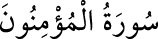

<a name=5407></a><br/>
<b>23-MÜ’MİNÛN SÛRESİ</b><br/>
<i><b>Mekke’de nâzil olmuştur. Özellikle ilk âyetlerinde kurtuluşa eren müminlerin</b></i><br/>
<i><b>ibâdetlerinden, ahlâkî yaşayışlarından ve nâil olacakları uhrevî nîmetlerden<br/>bahsedildiği için sûre ”el-Mü’minûn” adını almıştır. 118 ayettir.</b></i><br/>
